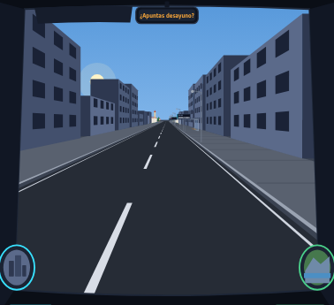
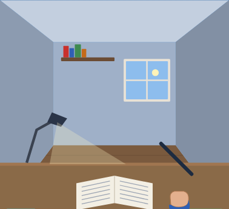

La escena igual, con la señal del próximo evento ya en la carretera. Debajo, una tarjeta que cuenta el momento en frases normales, lo que viene con la cuenta atrás y qué significa cada cosa que ves.

Vas al hospital: estás en tu jornada hasta las 15:00. En 20 minutos tienes la Sesión clínica (hasta las 11:00); es la señal verde que se acerca por la carretera.
La explicación va dentro de la escena, como un subtítulo grande. Tocarla abre lo mismo que el narrador. Ocupa menos, pero tapa un poco la carretera.
En casa, el mismo narrador: qué haces, hasta cuándo, qué toca después y, si hay algo que mire por ti (el sueño), el porqué en una línea.

Estás en casa, en el escritorio (tu rato de estudio) hasta las 18:00. A las 21:00 tienes la Cena con Laura y a las 22:40, a la cama.